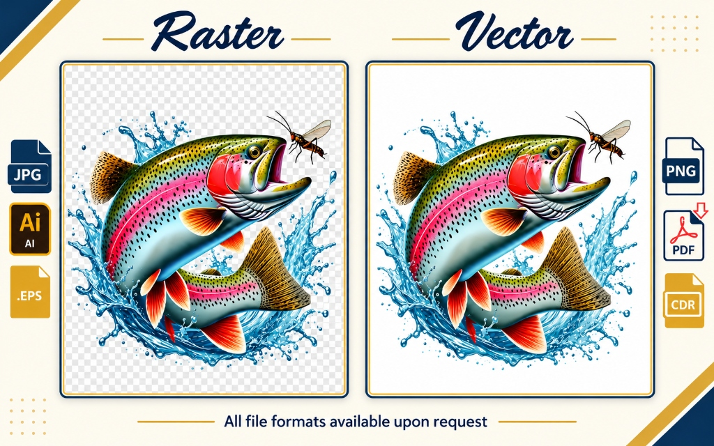
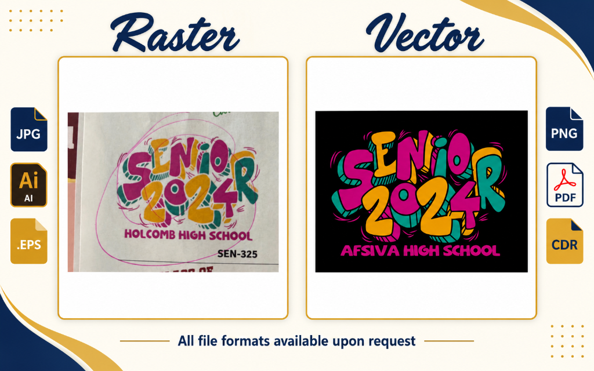

Professional Vector Art Conversion & Raster Redraw
Transform blurry JPGs, screenshots, and hand-drawn sketches into infinitely scalable, print-ready vector files. Perfect for screen printing, vinyl cutting, laser engraving, and large-format printing.
100%
Manual Pen-Tool Tracing
Infinite
Scalability (Zero Pixels)
12-24h
Turnaround Time
6+ Formats
AI, EPS, SVG, PDF, CDR, PNG
All standard commercial vector and print-ready formats delivered with every order
Raster vs. Vector Proof of Precision
See how our manual tracing transforms low-resolution pixelated artwork and hand-drawn concept sketches into clean vector art.
Rainbow Trout Water Splash Vector Redraw

Zero Blurry Halos
Pixelated raster edges are completely eliminated. Every droplet, fin barb, and scale is drawn with clean bezier paths.
Layer Grouping
Structured hierarchy with isolated water splash, trout body, insect wings, and shadows for seamless color manipulation.
Print-Ready Separation
Compatible with spot-color silk screen printing, direct-to-garment (DTG), DTF heat transfers, and large vinyl cuts.
School Apparel Typography: Concept Sketch to Production Vector

Pencil Lines Cleaned
Paper smudges, stray pencil marks, and uneven letter proportions are corrected into harmonious, bold typographic curves.
Bold Pop Colors & Fills
Flat vibrant color fills with crisp black outline borders tailored for black apparel, dark hoodies, or banner prints.
Vinyl & Cut-Path Ready
Clean outer boundary lines allow plotter blades to cut vinyl smoothly without double-cuts or tearing heat transfer film.
Where Our Vector Files Excel
Print shops, sign companies, and manufacturers demand clean vector curves. Here is where our files go to work every day.
Screen Printing & Separation
Organized spot color channels, Pantone solid coated color callouts, and white underbase generation for clean film output.
- check_circle Trapping & choke alignment
- check_circle Pantone (PMS) matching
- check_circle Film positive separation
DTF & Heat Transfers
Eliminate fuzzy white halos on black fabrics. We output 300 DPI transparent PNGs and scalable vector master files.
- check_circle Zero pixel halo artifacts
- check_circle 100% transparent backgrounds
- check_circle High-density ink output
Vinyl Cut Paths & Decals
Continuous, welded vector outlines with minimal anchor nodes so plotter knives glide smoothly without snagging or dragging.
- check_circle No overlapping double-cuts
- check_circle Smooth corner radiuses
- check_circle Graphtec & Roland tested
Laser Engraving & CNC
Hairline strokes for vector cutting and solid fills for raster engraving on wood, acrylic, leather, and powder-coated metal.
- check_circle Closed bezier loops
- check_circle Hairline cut boundary lines
- check_circle Clean raster fill regions
Vehicle Wraps & Billboards
Enlarge logos to 50 feet wide with zero pixelation or degradation. Perfect for commercial fleet wraps and architectural signage.
- check_circle Infinite geometric resolution
- check_circle Crisp typography at any scale
- check_circle Lightweight vector file sizes
Embroidery Art Prep
Digitizing software works best with clean vector lines. We prepare clean shapes that make embroidery stitch generation fast and flawless.
- check_circle Direct path importing
- check_circle Clean segment joins
- check_circle Seamless bundle with digitizing
Vector Redraw Pricing
Flat rates per artwork. Free minor edits included to guarantee satisfaction.
Simple Vector Redraw
For standard corporate logos, text typography, 1-3 color geometric icons, badges, and clean clip art conversions.
- check 100% manual Pen-tool redrawing
- check AI, EPS, SVG, PDF, CDR + 300 DPI PNG
- check 12-24 hour turnaround
- check Free minor edits & color adjustments
Complex Vector Redraw
For intricate mascots, complex gradients, multi-layered illustrations, hand-drawn paper sketches, crests, and vintage badges.
- check Multi-layer & intricate detail reproduction
- check Hand-drawn sketch to digital inking
- check Spot color separation layers included
- check AI, EPS, SVG, PDF, CDR + 300 DPI PNG
Vector Art Conversion FAQ
Why shouldn't I just use free online vector auto-tracers? expand_more
Automated tools generate muddy lines, distorted text, and thousands of unnecessary anchor points that crash vinyl cutters and print RIP software. Our artists manually recreate every line using bezier curves, giving you clean paths, legible typography, and organized layers.
Can you redraw a logo from a low-resolution phone screenshot? expand_more
Yes! Even if your image is small, blurry, or taken from a website header, our team can identify fonts, re-draw shapes, and reconstruct your original design with crystal clarity.
What files will I receive upon completion? expand_more
Every order includes: Adobe Illustrator (.AI), Scalable Vector Graphics (.SVG), Encapsulated PostScript (.EPS), Print-Ready Vector PDF, CorelDraw (.CDR), and a 300 DPI high-resolution transparent background PNG.
Can you change colors or text during the vector redraw? expand_more
Absolutely. Just include your instructions when placing the order (e.g., "Change the text to 2025" or "Make the blue darker"). We will incorporate your adjustments at no extra charge.
Convert Your Image to Vector Today
Send us your low-res image or sketch and receive production-grade AI, EPS, and SVG vector files within 12-24 hours.